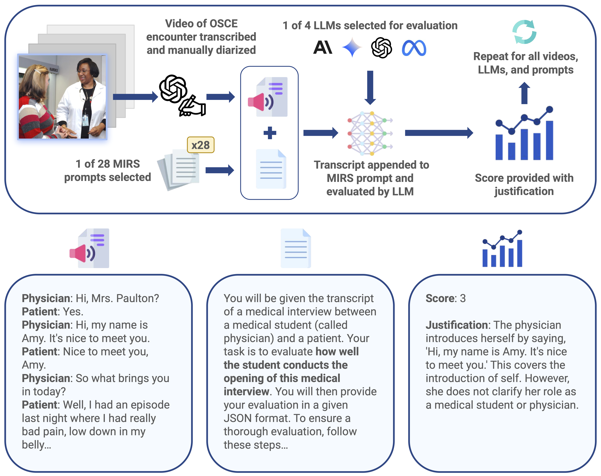
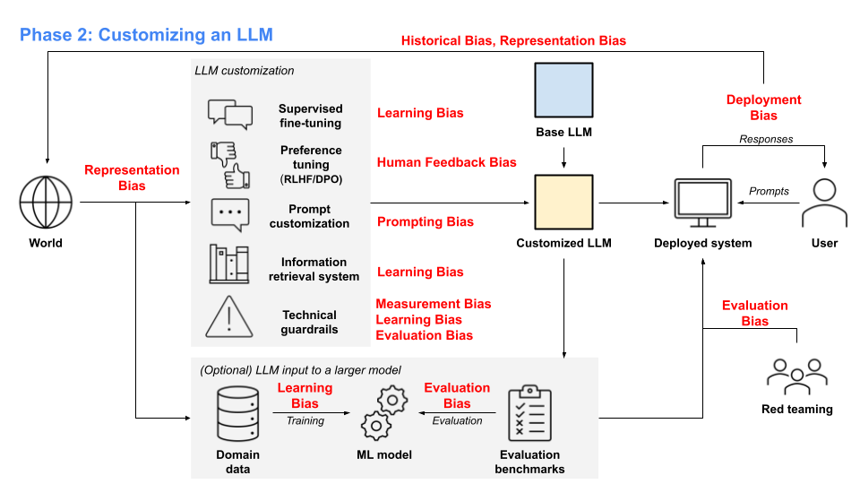
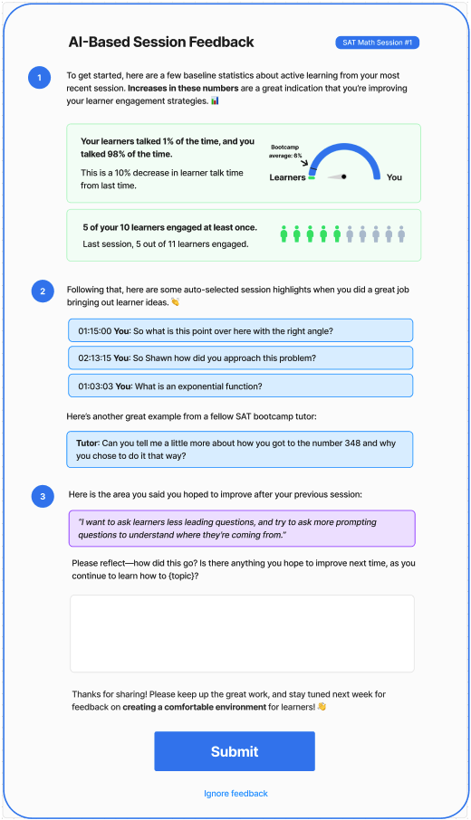

Research
My research focuses on AI-driven simulated humans and multimodal conversational analysis in Medical Education. I develop methods for creating realistic patient simulations that enhance clinical training by modeling patient interactions, analyzing dialogue dynamics, and generating meaningful feedback. My work explores how AI can support medical learners in improving their communication and clinical reasoning skills, as well as how to evaluate the effectiveness of AI-driven simulations in educational settings.
Representative papers are highlighted.
|
|

|
Benchmarking Generative AI for Scoring Medical Student Interviews in Objective Structured Clinical Examinations (OSCEs)
Yann Hicke*,
Jadon Geathers*,
Colleen Chan,
Niroop Rajashekar,
Justin Sewell,
Susannah Cornes,
Rene Kizilcec,
Dennis Shung
Arxiv, 2024
|
|

|
The Life Cycle of Large Language Models in Education: A Framework for Understanding Sources of Bias
Jinsook Lee,
Yann Hicke,
Renzhe Yu,
Christopher Brooks,
René F. Kizilcec
British Journal of Educational Technology, 2024
|
|

|
Enhancing Tutoring Effectiveness Through Automated Feedback: Preliminary Findings from a Pilot Randomized Controlled Trial on SAT Tutoring
Yann Hicke*,
Joy Yun*,
Mariah Olson,
Dorottya Demszky
Proceedings of the Eleventh ACM Conference on Learning@ Scale, 2024
|

|
AI-TA: Towards an Intelligent Question-Answer Teaching Assistant using Open-Source LLMs
Yann Hicke*,
Anmol Agarwal*,
Christina Ma*,
Paul Denny,
NeurIPS'23 Workshop: Generative AI for Education (GAIED), 2023
|

|
Assessing the efficacy of large language models in generating accurate teacher responses
Yann Hicke,
Abhishek Masand,
Wentao Guo,
Tushaar Gangavarapu
ACL, Innovative Use of NLP for Building Educational Applications Workshop, 2023
|

|
Automated Essay Scoring in Argumentative Writing: DeBERTeachingAssistant
Yann Hicke,
Tonghua Tian,
Karan Jha,
Frank Kim
LAK'23: Workshop on Partnerships for Cocreating Educational Content, 2023
|

|
From Human Days to Machine Seconds: Automatically Answering and Generating Machine Learning Final Exams
Iddo Drori,
Sarah J Zhang,
Reece Shuttleworth,
Sarah Zhang,
Keith Tyser,
Zad Chin,
Pedro Lantigua,
Saisamrit Surbehera,
Gregory Hunter,
Derek Austin,
Leonard Tang,
Yann Hicke,
Sage Simhon,
Sathwik Karnik,
Darnell Granberry,
Madeleine Udell
International Conference on Knowledge Discovery and Data Mining (KDD), 2023
|

|
A dataset for learning university STEM courses at scale and generating questions at a human level
Iddo Drori,
Sarah Zhang,
Zad Chin,
Reece Shuttleworth,
Albert Lu,
Linda Chen,
Bereket Birbo,
Michele He,
Pedro Lantigua,
Sunny Tran,
Gregory Hunter,
Bo Feng,
Newman Cheng,
Roman Wang,
Yann Hicke,
Saisamrit Surbehera,
Arvind Raghavan,
Alexander E Siemenn
Nikhil Singh,
Avi Shporer,
Jayson Lynch,
Nakul Verma,
Tonio Buonassisi,
Armando Solar-Lezama,
Educational Advances in Artificial Intelligence (EAAI), 2023
|

|
Human Evaluation of Text-to-Image Models on a Multi-Task Benchmark
Vitali Petsiuk,
Alexander E Siemenn
Saisamrit Surbehera,
Zad Chin,
Keith Tyser,
Gregory Hunter,
Arvind Raghavan,
Yann Hicke,
Bryan A Plummer,
Ori Kerret,
Tonio Buonassisi,
Kate Saenko,
Solar-Lezama,
Iddo Drori
NeurIPS Workshop on Human Evaluation of Generative Models (HEGM). Oral, 2022
|
|
Teaching Assistant
CS 4789: Introduction to Reinforcement Learning (Spring 2023)
CS 4780: Introduction to Machine Learning (Fall 2023)
|
|
Service
Reviewer: Neurips GAIED 2023
Student volunteer: Learning at Scale 2022
|
|

{kind=link}
{kind=link}
{kind=link}